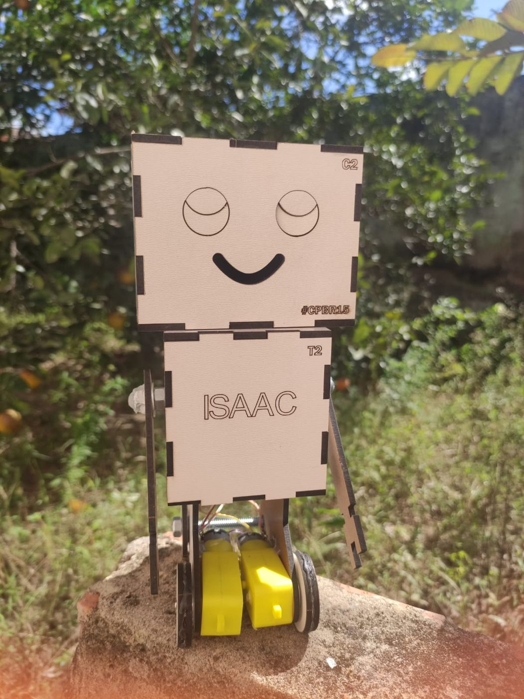

Projeto 02 · INCLUDE · Oficina · Robótica educacional
Meu primeiro robô
Oficina prática de robótica para introduzir crianças e adolescentes a estrutura, movimento, mecanica, energia eletrica e controle por meio da montagem de um robo simples, fisico e personalizavel.
13 registros fotograficos2 motores 3-6v1 kit de montagem

Protótipo montado com estrutura de madeira, motores DC, rodas, bracos mecanicos e conexao de bateria 9v.
Workshop node / active
01 / VISAO DA OFICINA
O projeto "Meu Primeiro Robo" foi pensado como uma experiencia mao na massa: os participantes deixam de apenas ouvir sobre tecnologia e passam a construir um objeto que se move, conecta mecanica e eletrica e permite testar causa e efeito na pratica.
A oficina transforma conceitos basicos de robotica em etapas visuais e acessiveis, usando pecas cortadas, parafusos, motores, rodas, fios e bateria para criar um robo simples, didatico e personalizavel.
02 / FACILITACAO
Conduzi a proposta como especialista tecnico, atuando como facilitador do Lab. de Realengo - RJ.
O objetivo da oficina foi compartilhar paixao por tecnologia e apoiar criancas e adolescentes em uma jornada de criatividade, inovacao e descoberta na robotica.
Organizar a oficina como um kit educacional reutilizavel, com manual de montagem, arquivos de corte, lista de materiais, roteiro de facilitação, desafios extras e registro dos prototipos criados pelos participantes.